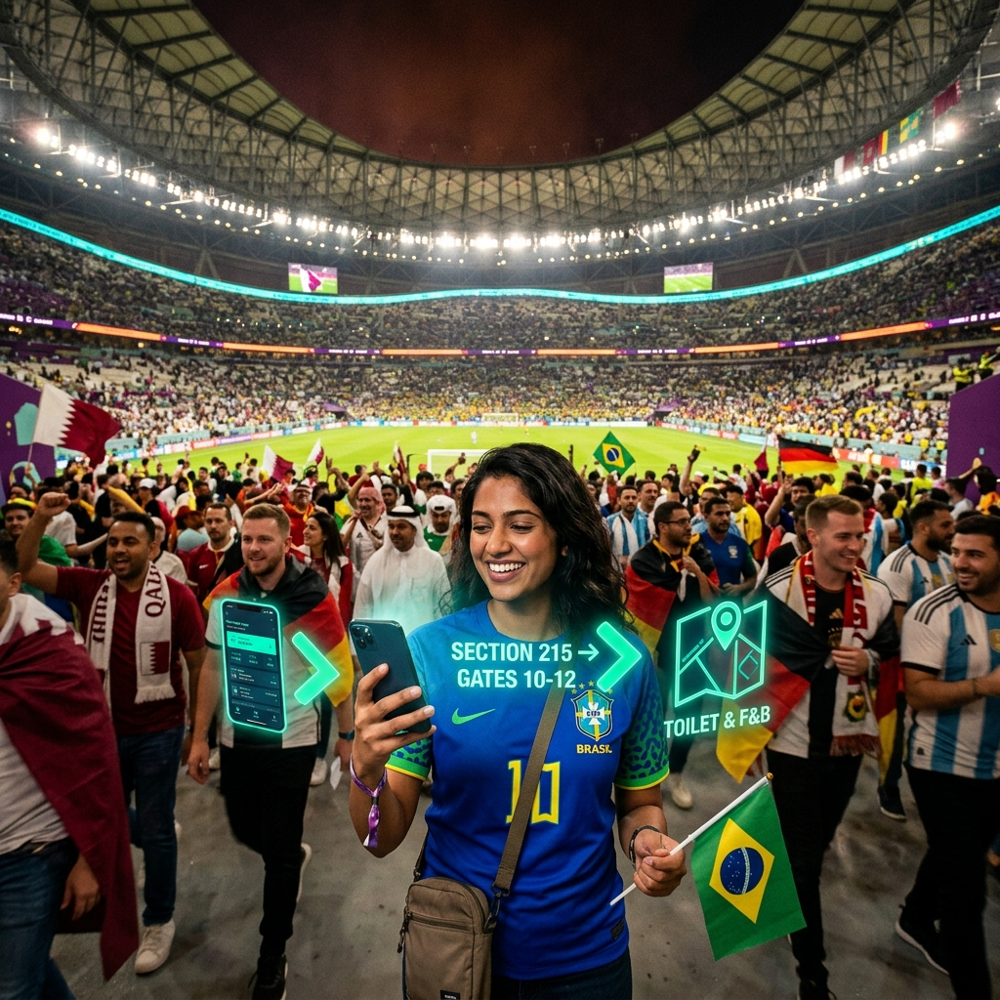

SYNAPSE is built in three layers: specialized reasoning agents, a Conductor that orchestrates and explains them, and an edge mesh that keeps the whole system alive when the stadium network can't keep up.
Eight specialized agents, one Conductor, and an edge mesh that survives every scenario.
A packed World Cup stadium can move more than 50 terabytes of data in a single match, and reconnection storms after big moments can cascade into what network engineers call an "avalanche effect" — a wave of failed retries that keeps the network down even after towers recover. Every cloud-only AI dashboard goes blind at exactly that moment.
SYNAPSE runs small, distilled language models directly on stadium Wi-Fi access points and low-power Bluetooth mesh beacons. They hold a locally synced picture of crowd density, gate status and accessibility routing — refreshed constantly while the network is healthy, and still fully functional for wayfinding, translation and volunteer dispatch when it isn't.
Conductor and all 8 agents reason centrally, learning across all 16 venues in real time.
Edge beacons detect rising latency and pre-emptively pull the freshest routing and translation state before the link drops.
On-device models keep serving wayfinding, accessibility routing and core translations from the last synced state — no spinner, no blank screen.
Queued decisions and local learnings reconcile with the Conductor, and lessons from that gate improve every other stadium's model.

When the stadium cell towers collapse under kickoff load, fans' phones still navigate the concourse. The SYNAPSE edge mesh pre-loads the last synced routing state — every wayfinding response feels instant even at zero bars.
Generates a personal route to seat, gate, nearest accessible restroom or shortest concession line, continuously re-planned against live crowd data. Runs a distilled model locally, so a fan's phone can keep navigating the concourse even with no bars.
Instead of: a static venue map or a digital-twin view that only organizers can see.
Forecasts density per gate and concourse segment 8–15 minutes ahead using anonymized turnstile, Wi-Fi-association-count and transit-arrival signals — never facial recognition or individual tracking — and flags a bottleneck before it's visible on any camera.
Instead of: a heat-map dashboard that shows a problem only after it has already formed.
Builds an opt-in "Fan Twin" profile capturing mobility, sensory, hearing, vision and cognitive needs, then personalizes routing, seating suggestions, and communications — sensory-friendly paths away from pyrotechnics and drum lines, visual strobe alerts for Deaf fans instead of audio-only announcements, and audio-haptic cues for blind fans.
Instead of: one reserved gate and a wheelchair icon on a map.
Combines metro schedules, rideshare surge data, shuttle capacity and parking-lot fill rate into a single personalized "leave by" recommendation, adjusted for a fan's specific gate and mobility needs — and re-optimizes automatically for the post-match dispersal surge.
Instead of: a generic transit-app link with no stadium-specific context.
Calculates each fan's actual carbon footprint for their trip — mode of transport, distance, group size — and converts it into a live incentive: transit credit, an expedited security lane, or a merchandise discount, turning sustainability into something a fan experiences, not a stat organizers report later.
Instead of: an end-of-tournament sustainability report nobody reads until it's over.
Provides live two-way voice translation across 40+ languages for fans and staff, auto-translates signage and push alerts based on real-time arrival-language mix at each gate, and gives volunteers an instant translated micro-script for unfamiliar situations — with sign-language avatar support for core safety messages.
Instead of: "deploying volunteers who happen to speak Spanish" as the entire multilingual strategy.
Rolls activity from all 16 stadiums into one live organizer briefing, and — critically — attaches a plain-language "why" to every recommendation so an audit or a post-incident review can see the reasoning, not just the output.
Instead of: a black-box dashboard that shows a recommendation with no accountable reasoning behind it.
Fuses camera feeds, radio chatter and volunteer voice reports into a drafted incident brief — suggested resource, suggested route for medical teams, translated summary — for a human dispatcher to confirm or override in seconds. It never dispatches autonomously; it removes the minutes lost assembling the picture by hand.
Instead of: a robotic security unit or a system that acts without a human decision in the loop.
Crowd forecasting runs on anonymized counts and flow signals, never facial recognition or individual identity tracking, and accessibility data is opt-in and fan-controlled at all times.
Each stadium's models improve a shared global model through federated learning with differential privacy — patterns travel between venues, raw personal data never does.
Every organizer-facing recommendation carries a natural-language "why," so decisions can be reviewed, challenged, and audited after the fact — not just trusted blindly.
Emergency and medical triage is always drafted for a human responder to confirm. The system accelerates judgment; it never replaces it.
Fan Twin profiles and journey data expire automatically after the event window unless a fan explicitly opts to keep them for future matches.
The same mesh architecture is designed to hand off to host-city transit authorities and venues after 2026 — see how on the Why SYNAPSE page.